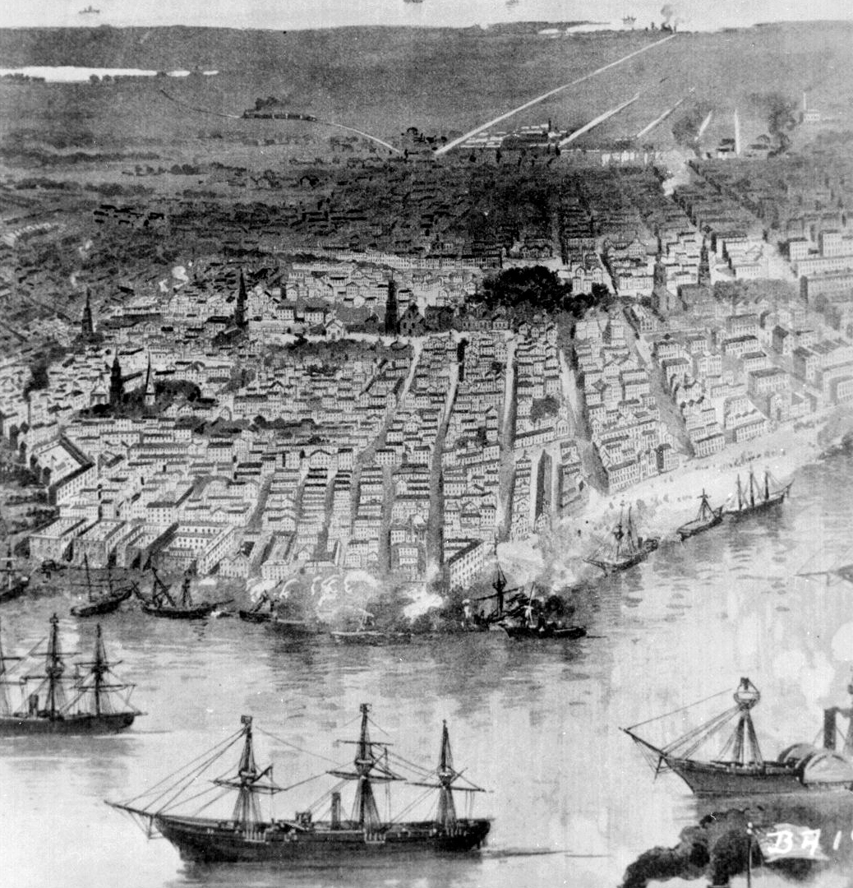
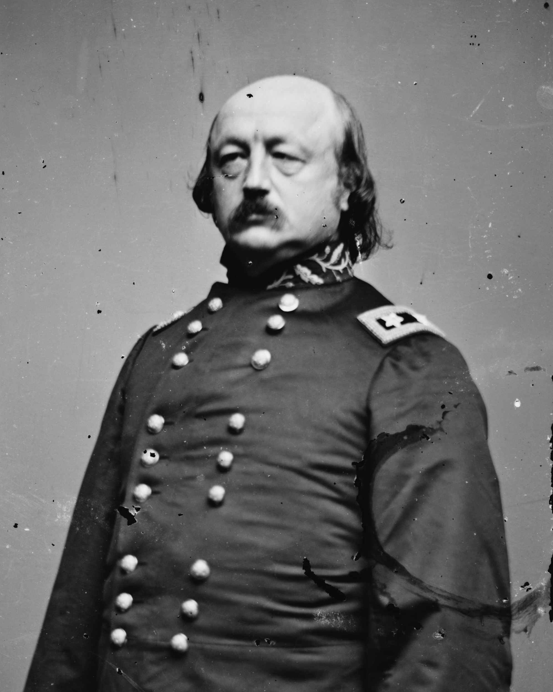

|
A great Union victory of the Civil War occurred with the
surrender of New Orleans on April 25, 1862. Control of the
Mississippi River was a major Union objective, and.the
capture of New Orleans was a crucial part of that control.
|

An 1894 engraving of the Battle of
New Orleans.
|
During the 1850s New Orleans ranked as one of the
Confederacy's most important cities. Not only did it lie at
the mouth of a major supply and transportation route, it was
also a major banking city. When New Orleans fell, the North
gained more than just strategic geographic control.
As part of a two-pronged plan to gain control of the
Mississippi River, Union Flag-Officer David Glasgow Farragut
led a squadron of ironclad and wooden vessels from the Gulf
of Mexico to the mouth of the Mississippi. A veteran of the
War of 1812 and the Mexican War, the 60-year-old Farragut
drew upon extensive military experience. Confederate forces,
who wrongly assumed that the attack on New Orleans would
come from the area north of the city, inadequately defended
the forts guarding the entrance to the Mississippi river.
Union ships, however, did not get through without a
fight. Confederate garrisons opened fire on the Union ships
with approximately 90 guns; the ships responded with twice
as much firepower. Southern gunboats attempted to sink
Union naval vessels but succeeded only in sinking the
Union's Varuna. Confederates also tried to use fire as
weapons. Tugboats pushed flaming rafts towards Union ships
and into the path of moving vessels.
In one and a half-hours, all but four of the Union
vessels managed to get past the one-mile area near the two
forts, and quickly traveled upriver to New Orleans.
Thirty-seven Union men died in the initial battle and
another 147 were wounded. Although they suffered fewer
human losses, the Confederate garrisons ultimately mutinied
and surrendered to Union forces.
As Farragut's men moved into New Orleans an angry armed
mob met them. Other Rebel supporters burned bales of cotton.
|

In the months following the
Battle of New Orleans, Union Maj. Gen. Benjamin
Butler would become the most hated man in the city.
|
Despite this, the large guns of the Northern military
easily subdued the largely civilian population of the
Southern city. Union control was quickly established even
though New Orleans' mayor refused to surrender. Union
leaders responded by raising the Union flag over city hall.
On May 1, 1862, Major General Benjamin Franklin Butler
led a fresh army of 15,000 troops to occupy New Orleans for
the remainder of the war. The Union thus gained control of
the Confederacy's largest and most international city. In
coming months Farragut used New Orleans as a base to launch
successful campaigns against Baton Rouge, Louisiana and
Natchez, Mississippi which further secured Union control of
the Mississippi River.
The capture of New Orleans proved easier than maintaining
peace. Many New Orleans citizens refused to recognize Butler
and the Union army as their rulers. Upper-class women in
particular went out of their way to be rude and
disrespectful to the Federals. In retaliation, just two
weeks after the city surrendered, Butler issued an order
that equated these women with prostitutes. An uproar ensued,
and for this and other reasons, the controversial Butler was
reassigned. Nevertheless, Union control of New Orleans and
large parts of Louisiana benefited the Union cause and made
a war hero of David Farragut.
Source: Joan Waugh, ed., Facts on File Encyclopedia of American
History: Civil War and Reconstruction, 1856 to 1869 (New York: Facts on
File, 2003), 251-252.
|